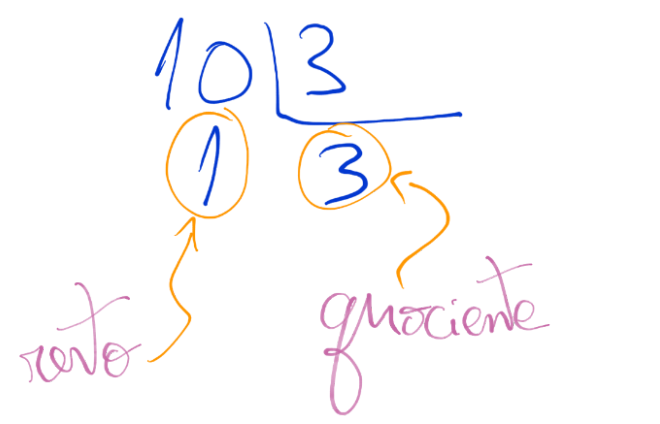
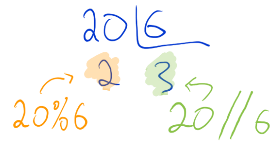

divisões
exatas e humanas inteiras
Material de apoio para a disciplina Linguagem de Programação da UACSA/UFRPE - 2020.1
Produzido pelo prof. João Pimentel
Será que esse tipo de divisão é útil? Mais pra frente vou explicar (SPOILER: sim!). Mas primeiro vamos ver um exemplo e praticar um pouco, para relembrar bem.
Se fosse uma divisão "normal" iríamos continuar a divisão usando casas decimais. Mas como estamos fazendo a divisão inteira, o nosso resultado é esse: 17 com resto 1.
Precisa de ajudar para relembrar como se faz a divisão inteira? Clique aqui.
Não sei se você reparou, mas o resultado da divisão inteira tem dois componentes: o quociente e o resto.
Sendo assim, na hora de fazer as contas com Python nós vamos precisar de DOIS símbolos diferentes, um para cada componente.
O // (barra barra) é usado para calcular o quociente da divisão inteira.
O %
(módulo,
representado pelo símbolo da porcentagem) é usado para calcular o resto da divisão inteira.
10//310%3Eu sei que é estranho, por que quando a gente vê esse % pensa logo em porcentagem. É questão de costume.
¯\_(ツ)_/¯
A propósito, Python não tem um símbolo específico para porcentagem. Se eu quiser calcular uma porcentagem, preciso usar as multiplicações e divisões normais. Por exemplo, 20 por cento de 50 pode ser calculado assim:
50*20/10050*0.2Calcule o resultado de
20//6Calcule o resultado de
20%6Se ligou?
20//6 dá 3, que é o quociente da divisão inteira
20%6 (20 módulo 6) dá 2, que é o resto da divisão inteira de 20 por 6.
Uma das utilidades desse tipo de divisão é que existem algumas coisas que queremos que sejam sempre inteiras. Por exemplo, você conhece o problema dos 35 camelos 🐪? Ou que tal se você ganhasse a metade de um carro?
Outra utilidade das divisões inteiras é para fazermos contas com data e hora.

Por exemplo, muitas vezes é mais útil saber que 200 minutos equivalem a 3 horas (200//60) e 20 minutos (200%60), do que saber que eles equivalem a 3.33 horas (200/60).

Janaína comprou 20 pirulitos para uma festa com 5 amigos. Ela quer saber quantos vão sobrar, depois que dividi-los igualmente entre todos 🤤
Outra utilidade é para sabermos se dois números são múltiplos ou divisores entre si. Sabendo isso, podemos descobrir se um número é primo ou não. Já os números primos são a base da criptografia que utilizamos para ter segurança na Internet.
Se a divisão inteira de A por B dá resto zero, quer dizer que...
Se A é múltiplo de B, quer dizer que...
Se a divisão inteira de X por 2 dá resto zero, quer dizer que...
Foto do meio carro: matéria de Eric Adler e Lynn Horsley
Imagem de calendário com relógio: Paomedia, utilizada sem modificações, com base na licença Attribution 3.0 Unported (CC BY 3.0)
Imagem de pirulito: Webalys
Imagem de cadeado: Nick Roach